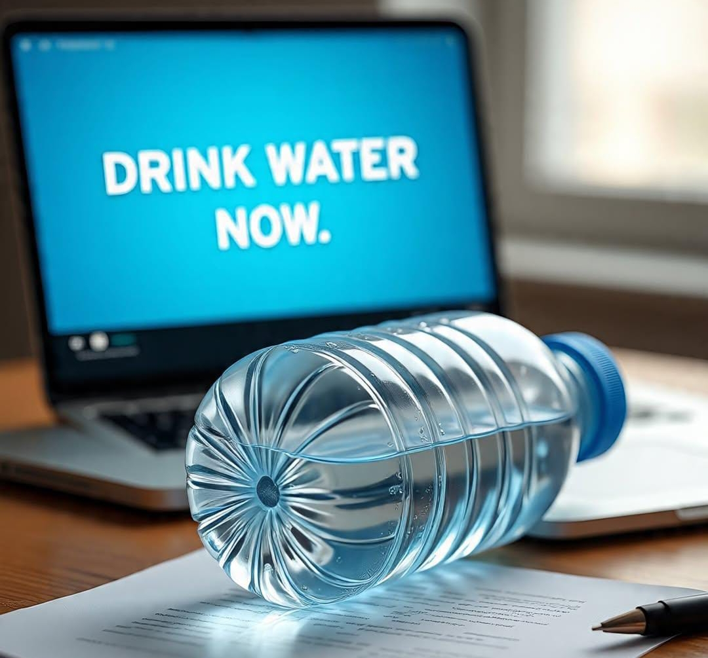
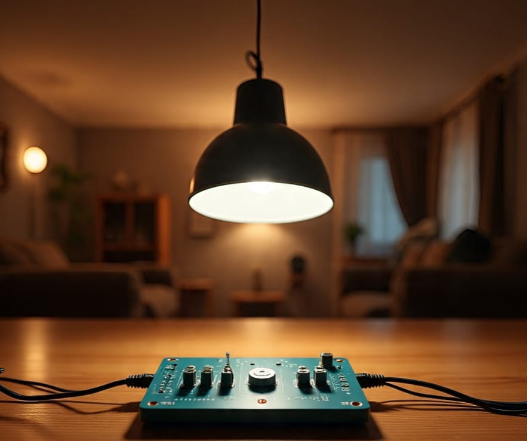

💼 Projects

💧 Water Reminder Assistant
A Python script that reminds users to drink water regularly.
- Notification popups with sound
- Customizable time interval
- Lightweight background script

🚶♂️ Human Follower Robot
A robot that follows people using IR sensors and motor logic.
- Arduino-based motion control
- IR sensor integration
- Obstacle avoidance features

💡 Room Light Automation
Automatically turns lights on/off based on motion detection.
- IR sensor + relay module
- Energy-saving design
- User-friendly and scalable
📜 Certificates

🎓 Python programming
Completed a detailed course in Python programming for engineering applications.

🏢 Internship at Delhi Transco Ltd
Gained practical experience in control systems, relay logic, and power engineering infrastructure.
×

📬 Contact Me
Let’s create something brilliant together!
Email: yasit22900@gmail.com
Phone: +91 9953911757
LinkedIn: linkedin.com/in/mohd-yasir